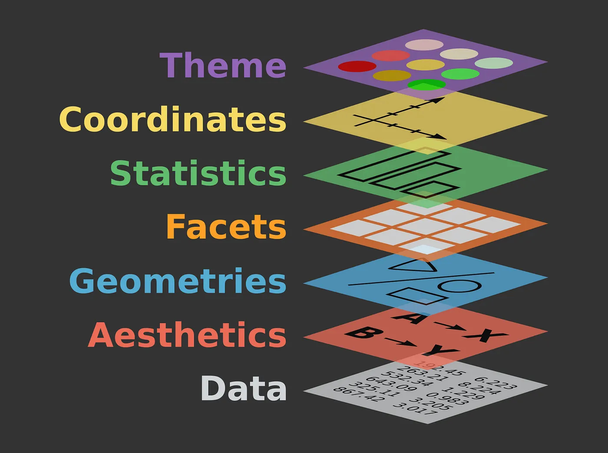
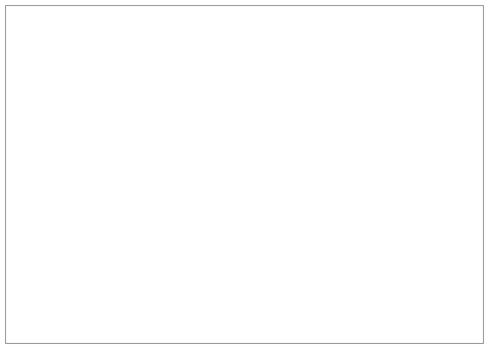
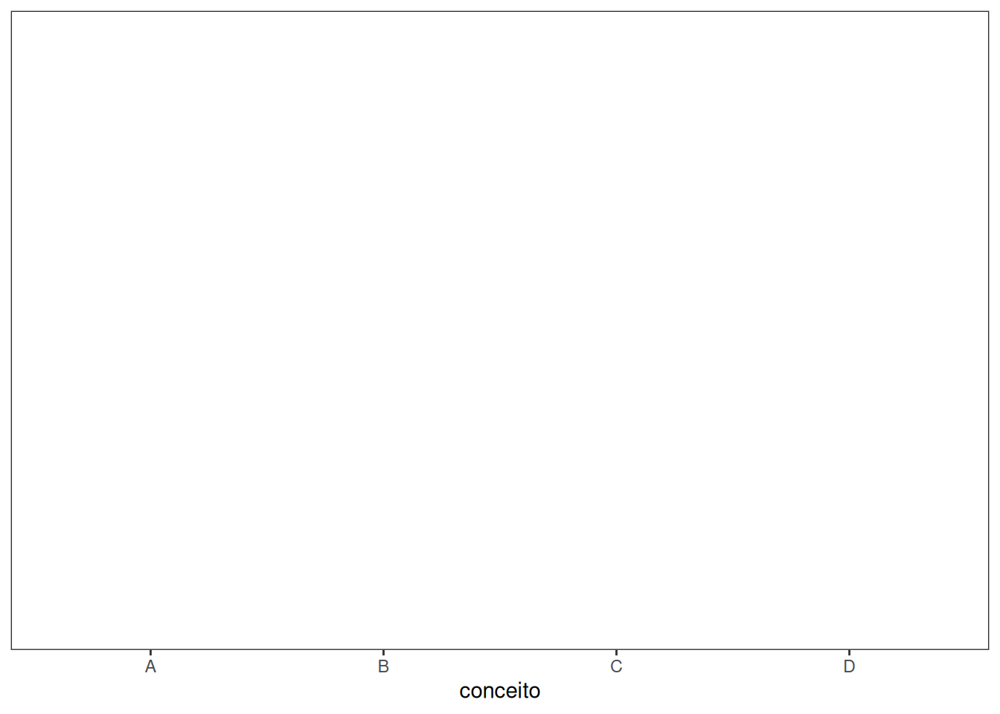
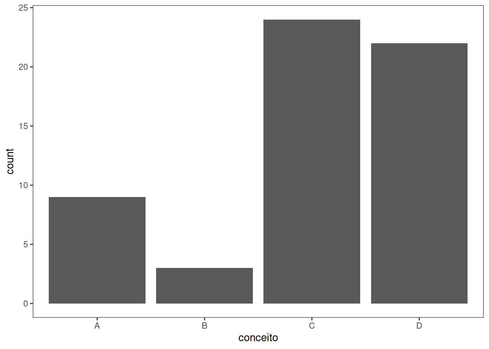
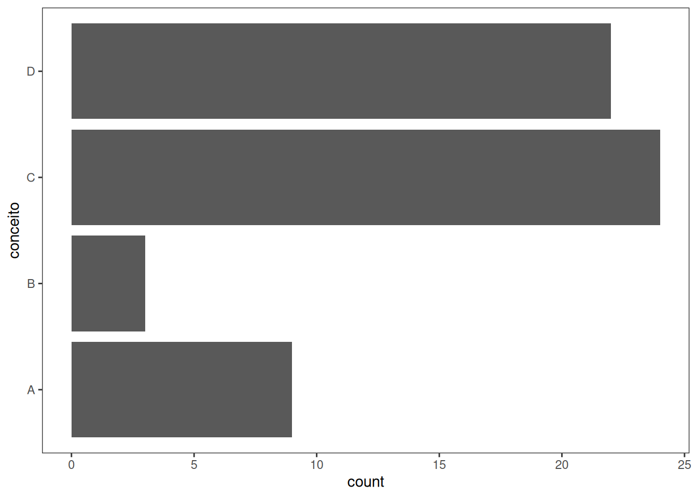
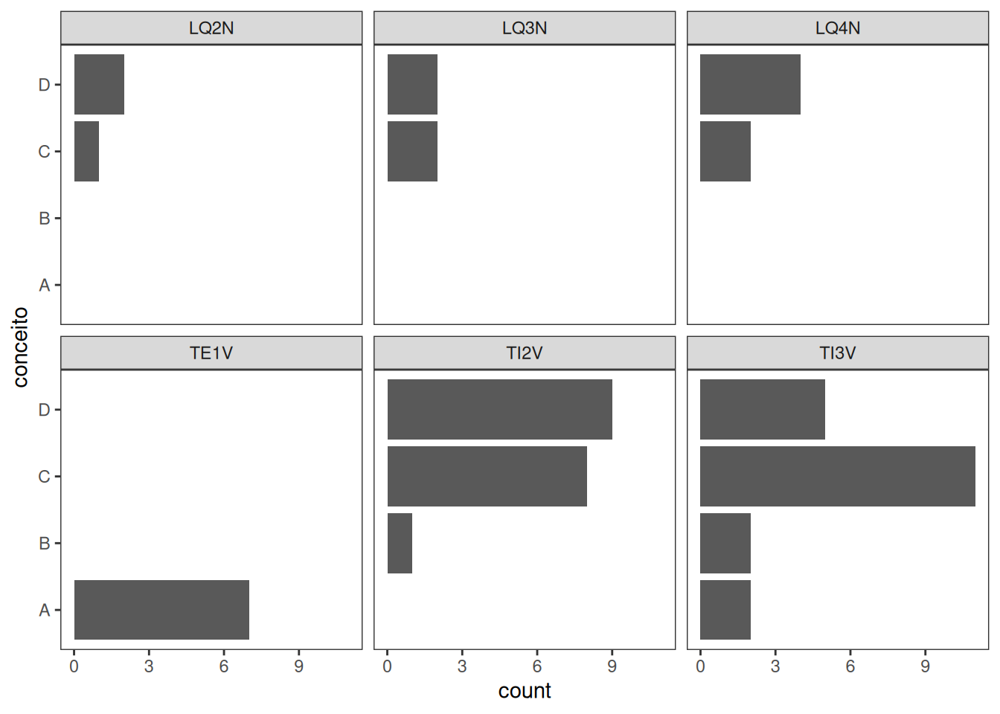

Estrutura lógica do ggplot2
Inspirado na obra “The grammar of graphics” de Leland Wilkinson (Wilkinson et al., 2005), Hadley Wickham publicou o seu artigo “A layered Grammar of Graphics” (Wickham, 2010; Wickham, 2009), onde menciona a lógica de construção de gráficos por camadas (“Stat 20 - A Grammar of Graphics”, [S.d.]; “Workshop 3”, [S.d.]). A figura ao lado mostra os principais componentes que podem formar cada camada.
Extensões
O pacote ggplot2 é muito poderoso na produção de gráficos, mas ainda é limitado. Entretanto, existem extensões no repositório oficial (“ggplot2 extensions”, [S.d.]) e extraoficial (“RPubs - Criando mapa do Brasil com ggplot2”, [S.d.]) que permitem expandir as suas funcionalidades.
Dados
Por questões óbvias, o primeiro passo para a construção de um gráfico seria os dados. ggplot reconhece estruturas de dados do tipo dataframes. Contudo, é recomendável que os dados sejam preparados utilizando técnicas de pré-processamento como limpeza, manipulação, transformação e organização da base de dados. Pacotes do ambiente tidyverse podem auxiliar nessa tarefa.
Rows: 58 Columns: 20
── Column specification ────────────────────────────────────────────────────────
Delimiter: ","
chr (9): name, turma, registration, situacao, conceito_ip, conceito_prova, ...
dbl (11): presenca, qde, questoes, aulas, frequencia_questoes, frequencia_au...
ℹ Use `spec()` to retrieve the full column specification for this data.
ℹ Specify the column types or set `show_col_types = FALSE` to quiet this message.| Matrícula | Turma | Presença | Exercícios | Prova | Conceito |
|---|---|---|---|---|---|
| 20251IRA10030003 | LQ2N | 6 | C | D | D |
| 20241IRA10030007 | LQ2N | 6 | D | D | D |
| 20251IRA10030001 | LQ2N | 8 | C | D | C |
| 20241IRA10030006 | LQ3N | 4 | D | C | C |
| 20230021232 | LQ3N | 5 | C | D | D |
| 20241IRA10030003 | LQ3N | 6 | C | B | C |
| 20241IRA10030013 | LQ3N | 5 | D | D | D |
| 20230021152 | LQ4N | 5 | B | C | C |
| 20230021368 | LQ4N | 5 | B | C | C |
| 20230021170 | LQ4N | 5 | B | D | D |
grafico <- Dados
ggplot(data = dados)
Atributos estéticos
A camada referente aos atributos estéticos é responsável por transformar valores numéricos em valores visuais. Nessa camada também faz parte as funções escala que possui a tarefa de fazer personalizações nesses valores visuais. O inverso das funções escala são as funções guia que convertem valores visuais em numéricos.
grafico <- (Dados + atributos estéticos)
ggplot(data = dados,
aes(x = conceito)
)
Escala
Elementos geométricos
grafico + (Elementos geométricos + estatística)
ggplot(data = dados,
aes(x = conceito)
)+
geom_bar(stat = "count")
Coordenadas
grafico + coordenadas
ggplot(data = dados,
aes(x = conceito)
)+
geom_bar(stat = "count")+
coord_flip()
Facetas
grafico + facetas
ggplot(data = dados,
aes(x = conceito)
)+
geom_bar(stat = "count")+
coord_flip()+
facet_wrap(~ turma)
Bibliografia
ggplot2 extensions., [S.d.]. Disponível em: <https://exts.ggplot2.tidyverse.org/index.html>
RPubs - Criando mapa do Brasil com ggplot2., [S.d.]. Disponível em: <https://rpubs.com/prisciladalepiane/mapa_brasil>
Stat 20 - A Grammar of Graphics., [S.d.]. Disponível em: <https://stat20.berkeley.edu/spring-2024/2-summarizing-data/03-a-grammar-of-graphics/notes.html>
WICKHAM, Hadley. A Layered Grammar of Graphics. Journal of Computational and Graphical Statistics, v. 19, p. 3–28, 2010.
WICKHAM, Hadley. Ggplot2 : elegant graphics for data analysis. [S.l.]: Springer, 2009. p. 212
WILKINSON, Leland et al. The Grammar of Graphics {Statistics and Computing; 2nd Ed.}. [S.l.]: Springer, 2005.
Workshop 3: Introduction to data visualisation with ggplot2., [S.d.]. Disponível em: <https://r.qcbs.ca/workshops/r-workshop-03/https://r.qcbs.ca/workshops/r-workshop-03/>